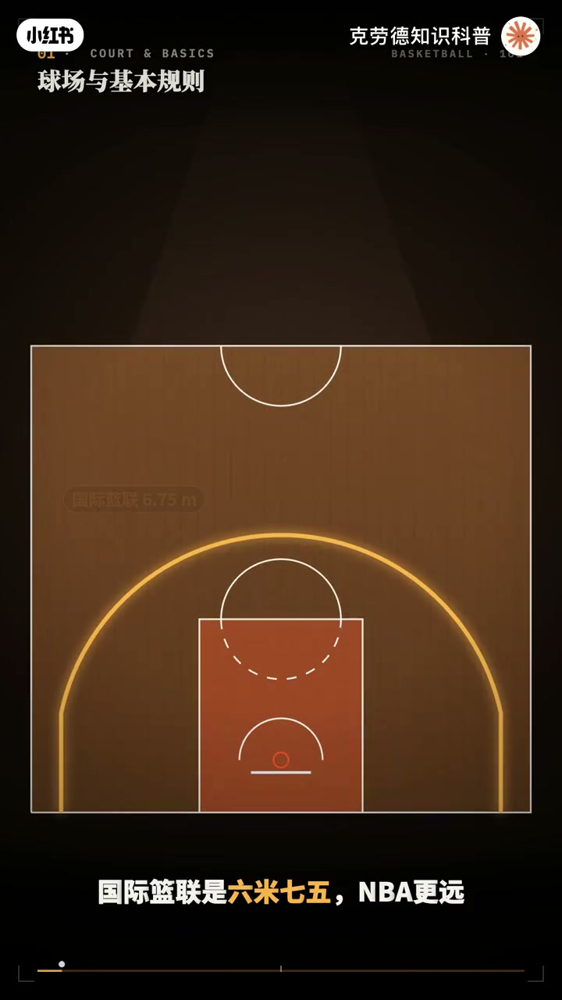
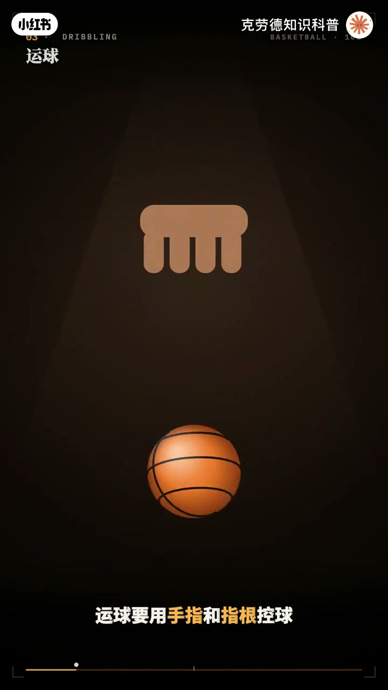
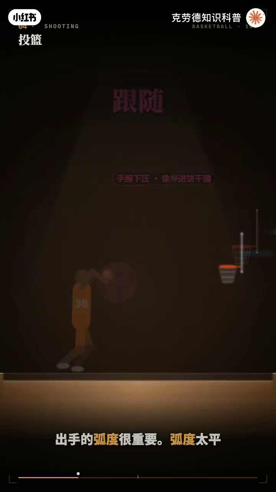
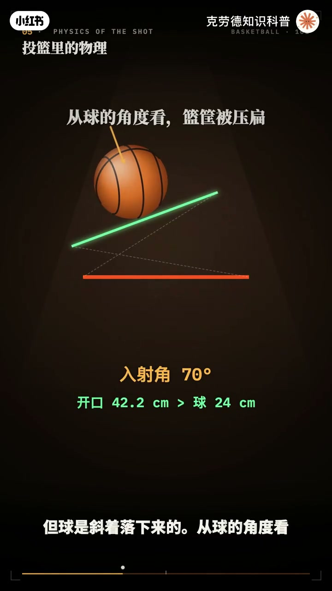
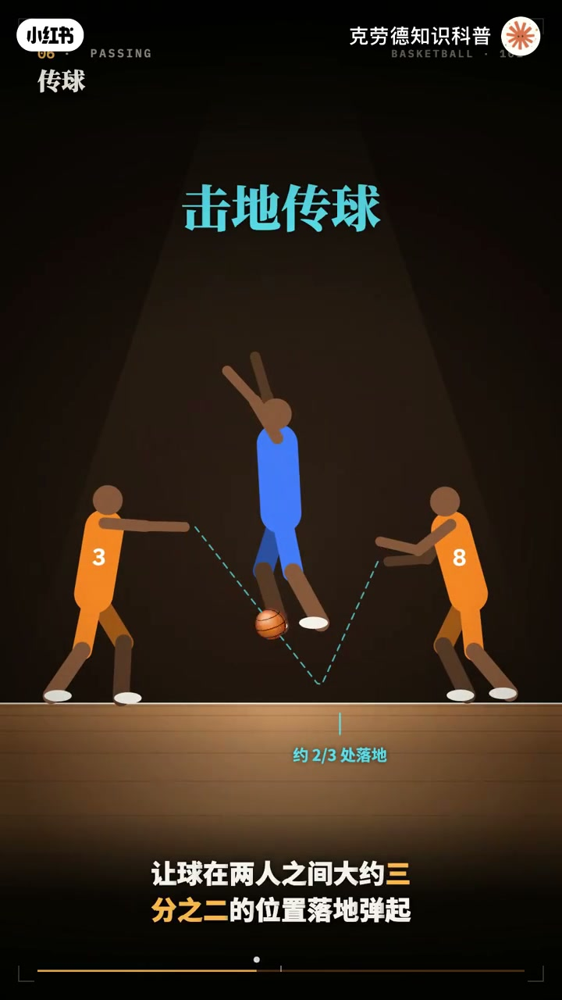
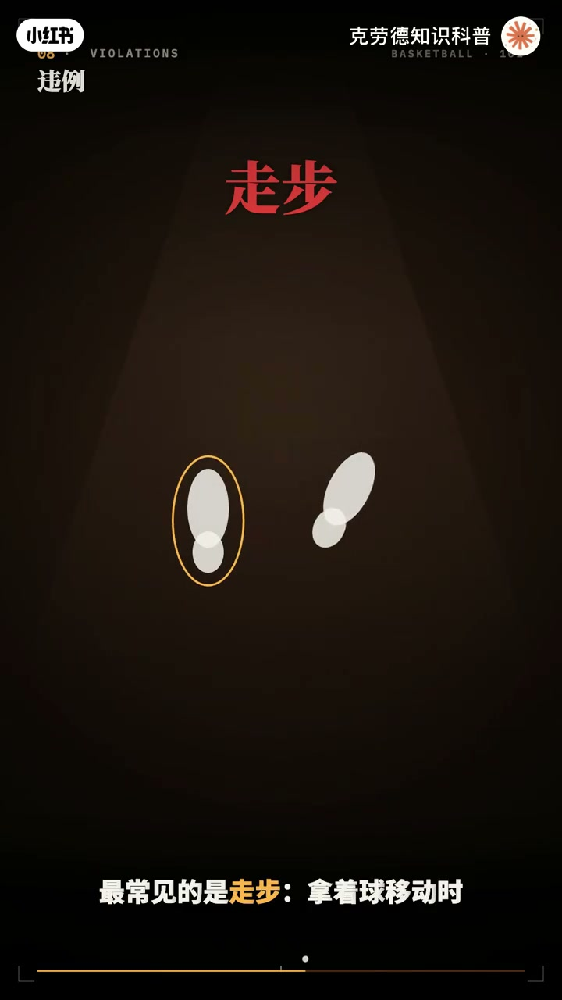
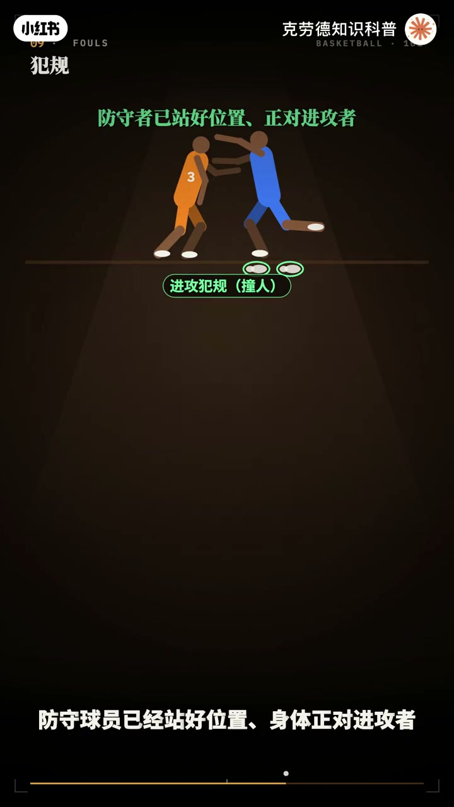
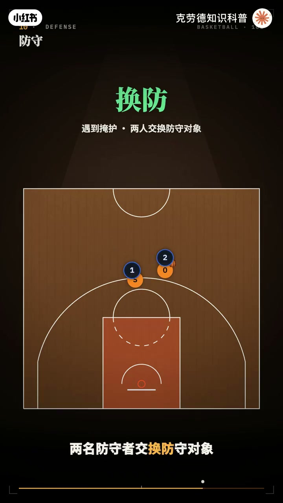
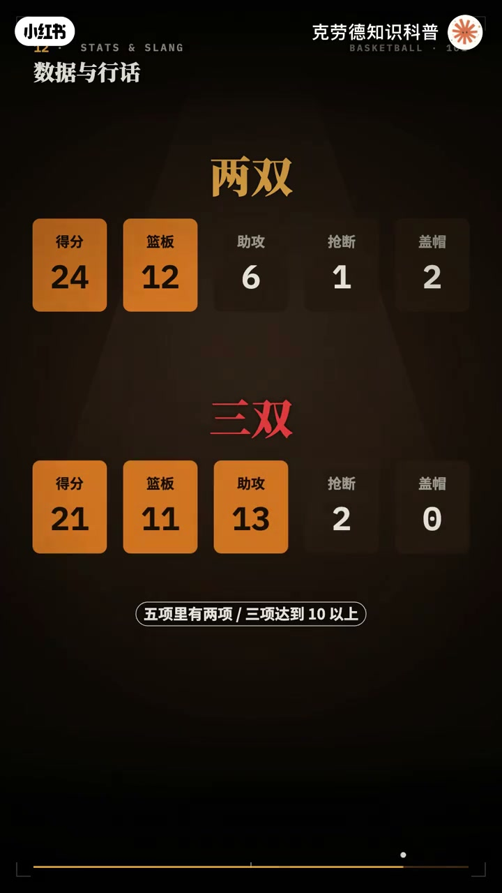
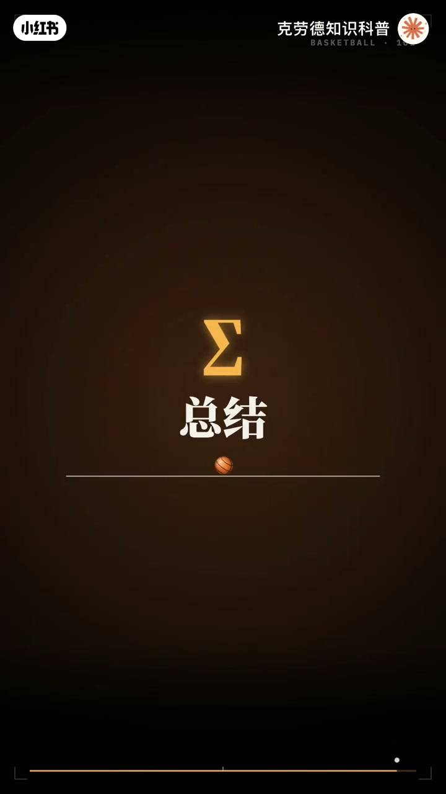

内容要点
「一个动画完全看懂篮球硬核原理🏀」教程要点：一颗球 一个篮筐 十个人 → 篮球是全世界最受欢迎的运动之一 → 可是 走步到底是几步 → 挡拆是什么；详见正文。
知识结构
一颗球 一个篮筐 十个人
掉在1米2到1米4之间
双脚不交叉
- 一颗球 一个篮筐 十个人
- 篮球是全世界最受欢迎的运动之一
- 可是 走步到底是几步
- 挡拆是什么
- 连防和人盯人有什么区别
一颗球 一个篮筐 十个人
00:00–05:08一颗球 一个篮筐 十个人
一颗球 一个篮筐 十个人；篮球是全世界最受欢迎的运动之一；可是 走步到底是几步；挡拆是什么；连防和人盯人有什么区别；打铁 三双 绝杀；又都是什么意思；这期视频从技术到规则；战术 再到物理和行话；一次把篮球讲透；先认识球场；国际篮连的标准球场长28米；宽15米 篮筐离的3米05；篮下的长方形区域叫限制区；也叫三秒区 俗称油漆区；它前端的那条线是罚球线；离篮板4米6；外面那条大弧线是三分线；国际篮连是6米75；MBA更远是7米24；线外头进得3分 线内得2分；罚球一次一分；篮下还有一条小半圆；叫合理冲撞区；后面讲犯规时会用到；一场比赛分四节；国际篮连每节10分钟；MBA每节12分钟；平局就打加时 每个加时5分钟；每队场上5个人；进攻方拿球后；要在24秒内出手；而且球必须碰到篮筐；这就是24秒进攻时间；场上5个人；传统上分5个位置；用1到5号来称呼；1号位 控球后位；球队的组织者；负责运球过半场；发起进攻 分配球；2号位 得分后位；主要负责外线投篮和得分；3号位 小前锋；身材和技术都比较全面；能突破 能投篮 能防守；4号位 大前锋；在内线抢篮板 做掩护 防守；现在也要求能投中远距离；5号位 中锋；通常是全队最高的人；守护篮下；负责篮板 盖帽和篮下得分；现代篮球的位置越来越模糊；摇摆人能打2号位和3号位；3D球员专门投3分 做防守；空间型4号位；能拉到3分线外投篮；把内线空出来；运球是篮球最技术的技术；运球要用手指和指跟控球；而不是用手掌拍球；手腕和手指像弹簧一样下压；球弹回来时顺势接住 再往下压；眼睛不要看球；要抬头看场上的队友和防守者；身体压低 运球的高度越低；越不容易被断；用身体和飞运球守护球；让自己始终挡在防守者和球之间；体前变相也叫交叉步运球；在身体前面；把球从一只手快速拍到另一只手；同时向另一侧突破；胯下运球 从两腿之间换手；背后运球 从背后换手；这两种都能在换手时；用身体挡住球；转身运球 以一只脚为轴；背对防守者转身 带球换方向；还有节奏的变化；运球中突然停顿 又突然加速；脚急停急起；假装要变相；却继续向原方向突破；叫内外运球；好的运球不在于花样多；而在于改变速度和方向；篮球的最终目的是把球投进篮筐；投篮的基本要领可以继承四个词；平衡 瞄准 肘部 跟随；平衡 双脚与肩同宽；膝盖微屈 力量从腿开始；瞄准 眼睛盯住篮筐前沿；肘部 投篮手的肘关节；对准篮筐 不要往外撇；跟随 出手后手腕自然下压；像把手伸进饼干灌篱一样；保持这个动作；出手的弧度很重要；弧度太平；球几乎是凭着撞向篮筐；能进的空间很小；弧度高一些球从上方落下；篮筐看起来就变大了；一般来说；出手角度在45-55度之间比较理想；正确的出手会让球向后旋转；碰到篮筐时；后旋能卸掉一部分速度；让球更容易弹进去；这叫投篮手干软；投篮的种类；原地投篮 跳投 几天跳投；还有向后撤一步；拉开空间 带投的后撤步；罚球是唯一没人防守的投篮；好的罚球手都有固定的准备动作；比如运气下球 深呼吸；每次都一模一样；这叫罚球节奏；篮下的技术；最基本的是上篮；一般用离篮筐远的那只守护球；进的那只手上篮；还有从篮筐另一侧出手的反手上篮；高难度的终结方式；抛投 也叫高抛；在大个的前面把球高高抛出去；欧洲步 上篮时左右两步大幅度变向；躲开防守；勾手 侧身用一只手把球勾向篮筐；很难被封盖；最后是扣篮；直接把球按进篮筐；最稳 也最能点燃全场；篮球场上处处是物理；我们来算几道题；第一道；篮球能不能从篮筐里轻松穿过；篮筐的内径是45厘米；标准7号球的直径大约24厘米；差不多能并排放下两颗球；但球是斜着落下来的；从球的角度看；篮筐的开口被压扁了；落得越平 开口越窄；算一下；入射角低于大约32度；开口就比球还窄；根本不可能空心入网；这就是投篮一定要有弧度的原因；第二道；罚球最省力的出手角度是多少；罚球限离篮筐中心大约4米2；出手点比篮筐低大约1米；用抛物线攻势算出来；最省力的出手角度大约52度；出手速度只要每秒7.2米左右；球在空中飞不到一秒；犯成三分球；距离远了一半多；出手速度要提高到每秒8.5米左右；最省力的角度反而降到48度上下；越远出手越要平一点；力量越大一点；第三道；篮球的弹性；国际蓝连规定；球从1米8的高度落下；弹起后量到球顶



05:06–09:06掉在1米2到1米4之间
掉在1米2到1米4之间；算下来球每落地一次；大约要损失四成的能量；这也是基地传球比胸前传球慢的原因；第四道；制空时间；原地起跳80厘米；在空中的时间大约只有0.8秒；但其中有七成的时间；人都待在跳跃高度的上半段；所以扣篮的人看起来像飘在空中；传球永远比运球快；好的传球能让整个球队活起来；胸前传球；双手持球在胸前；向前推出；手腕外翻；最常用；最稳定；基地传球；让球在两人之间；大约三分之二的位置落地弹起；从防守者的手下面穿过去；高调传球；从防守者的头顶传过去；常用在给内线和空气的队友；还有单手侧传；背后传球；和不看人传球；他们都能骗过防守者的眼睛；空中接力；把球传到篮筐附近的空中；队友起跳后；在空中接住；直接扣进；传球直接帮助队友得分；叫助攻；传球被抢断；出界；或者违例丢球；叫失误；投篮不进；谁抢到球；谁就得到球权；这叫篮板球；抢篮板的关键是卡位；投篮出手后；先转身；用身体和臀部顶住对手；把它挡在身后；再起跳抢球；卡位比跳得高更重要；抢到自己投失的球；叫进攻篮板；也叫前场篮板；能带来二次进攻；抢到对方投失的球；叫防守篮板；也叫后场篮板；抢到进攻篮板后；在空中直接把球补进去；叫补篮或者补扣；内线的另一个技术；是背身单打；背对篮筐接球；用身体一点点把防守者挤向篮下；再转身；勾手或者假动作终结；内线的脚步变化；比如连续的假动作加转身；被称为梦幻脚步；围力是违反了规则；但没有身体接触；围力的惩罚是交换球权；最常见的是走步；打着球移动时；中枢脚离地后右落下；或者迈出的步数超过规定；就是走步；很多人说三步上篮；其实规则允许的是两步；现在的规则里；运球中收球那一步叫零步；不算步数；零步之后还能再走两步；所以看起来像三步；两次运球；运球结束；双手持球之后；又重新开始运球；翻腕也叫携带球；运球实手；掌握住球的下半步；把球翻起来；等于短暂的拿住了球；还有几个和时间有关的围力；进攻队员在三秒区里；停留超过三秒；叫三秒围力；持球队员被严密防守；五秒不出手；不运球；叫五秒围力；后场拿球八秒内没过半场；叫八秒围力；二十四秒内没有出手碰筐；叫二十四秒围力；回场；球已经过了半场；进攻方又让球回到后场；并且自己先碰到球；干扰球；球在下落过程中；已经高于篮筐时；防守队员去碰它；或者球在篮筐上方的时候去拍它；干扰球直接判进球有效；犯规是违反规则的身体接触；每名球员的犯规次数有上限；国际篮联是五次；NBA是六次；满了就要被罚下；打手；防守时打到了进攻球员持球的手；推人；拉人；扮人；也都属于亲人犯规；阻挡和带球撞人；是最难判的一对犯规；防守球员已经站好位置；身体正对进攻者；被进攻者撞上；是进攻犯规；也叫撞人；如果防守球员还在移动；没站稳；就发生接触；是防守犯规；叫阻挡；但如果防守球员；站在篮下的合理冲撞区里；就不能造进攻犯规；这是为了鼓励进攻；保护突破的球员；投篮时被犯规；如果球没进；罚两次球；三分出手就罚三次；如果球进了；得分有效；还有拳队犯规；国际蓝联规定；每节拳队犯规满四次之后；再犯规；就直接罚球；更严重的有技术犯规；比如对裁判不礼貌；还有违体犯规；也就是没有去抢球；动作过大的犯规；NBA叫恶意犯规；进攻赢得比赛；防守赢得冠军；防守姿势；双脚略宽一肩；膝盖弯曲；重心压低；一只手干扰传球；一只手干扰投篮；移动时用滑步



09:04–12:38双脚不交叉
双脚不交叉；防守分两大类；人丁人；每个人负责盯防一名对手；对手去哪你跟到哪；联防；每个人负责防守一块区域；谁进了你的区域你就防谁；最常见的是二三联防；前面两个人；后面三个人；还有三二联防；一三一联防；协防；队友被突破时；其他人及时补上去；包夹；两个人同时防守持球的人；换防；遇到掩护时；两名防守者交换防守对象；防守的高光时刻；戴帽把对手的投篮在空中拍掉；俗称吃火锅；抢断把对手的球断走；还有站好位置；吃下进攻犯规；这叫造犯规；篮球是五个人的运动；战术就是让五个人配合起来；最经典的战术是挡拆；一名队友站到持球人的防守者身边；用身体做一堵墙；这叫掩护；也就是挡；持球人借着这堵墙；甩开防守者；掩护完成后；掩护的人立刻转身往篮下跑；接球上篮；这叫顺下；也就是拆；如果掩护的人；向外跑到三分线投篮；叫外弹；同线；没有球的队员；趁防守者看球的时候；突然切向篮下接球；从防守者背后切入；叫后门；快攻；抢到篮板或者断球后；趁对方还没退防；快速推进；以多打少；拉开单打；把队友都拉到两边；给球队最好的得分手；一个人单挑的空间；而所有进攻战术的基础；都是空间；外线的人站开；防守就要扩大范围；内线和突破的通道就打开了；最后；认识一些常见的数据和行话；两双；得分；篮板；助攻；抢断；盖帽这五项里；有两项达到十个以上；三双；有三项达到十个以上；正负值；一名球员在场上时；球队得分；减去失分；它能反映一名球员；对比赛的整体影响；空心；球不碰篮筐；直接入网；打铁；投篮碰筐不进；三步粘；连篮筐和篮板；都没碰到；打板；借助篮板把球弹进去；绝杀；在比赛最后时刻；投进决定胜负的球；压少；在时间结束的哨声；或者风鸣声响起前；球已经出手并投进；垃圾时间；比赛胜负已定；双方都换上替补的时段；抢七；七场四胜的系列赛；打到最后一场；吃饼；接队友的传球；轻松得分；大心脏；关键时刻赶出手；能投进的球员；想打好篮球；也有一些经验之谈；运动前一定要充分热身；尤其是脚踝和心肝；篮球最常见的伤病；就是崴脚；可以带护踝穿合适的篮球鞋；多练弱侧手；只会用一只手运球和上篮；防守者很容易预判你的方向；投篮练习要先进后远；先在篮下把动作练对；再慢慢拉远距离；动作比距离更重要；场上要多沟通；喊掩护；喊换防；喊要球；篮球是团队运动；会说话的球队防守更好；最后多看比赛；看高手怎么跑位；怎么选择；比单纯练花样；比单纯练花样；更能提高篮球智商；最后；用几句话；带走篮球的全部门道；1号组织；2号投篮；3号全面；4号内线；5号护框；运球靠节奏；投篮靠平衡；瞄准；手部和跟随；弧度要够高；入射角太平；连空心的可能都没有；违例交换球权；犯规要法；阻挡还是撞人；看防守者；站没站好；挡拆；空切；是进攻的核心；卡位和沟通；是防守的根本；热身防伤；多练弱侧守；多看比赛；一颗球；十个人；打的是配合；也是智慧




口述/画面要点（40段）
结合 Whisper medium 与画面大字整理；专有名词已校对。
一颗球 一个篮筐 十个人
篮球是全世界最受欢迎的运动之一
可是 走步到底是几步
挡拆是什么
连防和人盯人有什么区别
打铁 三双 绝杀
又都是什么意思
这期视频从技术到规则
战术 再到物理和行话
一次把篮球讲透
先认识球场
国际篮连的标准球场长28米
宽15米 篮筐离的3米05
篮下的长方形区域叫限制区
也叫三秒区 俗称油漆区
它前端的那条线是罚球线
离篮板4米6
外面那条大弧线是三分线
国际篮连是6米75
MBA更远是7米24
线外头进得3分 线内得2分
罚球一次一分
篮下还有一条小半圆
叫合理冲撞区
后面讲犯规时会用到
一场比赛分四节
国际篮连每节10分钟
MBA每节12分钟
平局就打加时 每个加时5分钟
每队场上5个人
进攻方拿球后
要在24秒内出手
而且球必须碰到篮筐
这就是24秒进攻时间
场上5个人
传统上分5个位置
用1到5号来称呼
1号位 控球后位
球队的组织者
负责运球过半场